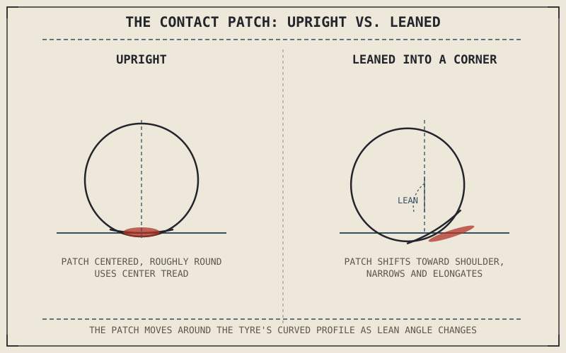

On a motorcycle standing straight up, the contact patch is a small, roughly oval area near the tyre's center — modest, but present across the tyre's widest section. Lean that same motorcycle over into a corner, and the patch doesn't just move; its size, shape, and position on the tyre all change simultaneously, in ways a car tyre's contact patch never has to deal with at all. Understanding that shifting patch is the key to understanding almost everything this part will say about grip.
Chapter 6.2 explained how bias-ply and radial construction let a tyre's carcass flex differently, and closed by promising that construction only matters because of what it does to the contact patch touching the road. This chapter is that contact patch, examined directly.
A Curved Tyre Meeting a Flat Road
A motorcycle tyre isn't flat across its profile the way a car tyre roughly is — it's distinctly rounded, curving away from the centerline toward each shoulder, which is precisely what allows the bike to lean over at all without the edge of a flat tread lifting off the ground. Where that curved rubber surface meets the flat road, it deforms slightly under the tyre's own air pressure and the motorcycle's weight, flattening out into a small area of actual contact — the contact patch — rather than touching along an infinitely thin line the way a perfectly rigid curved surface would. That deformation is not a flaw; it's the entire mechanism by which a tyre generates any contact area at all.
Why Leaning Changes Everything About It
When the motorcycle is upright, the contact patch sits near the tyre's centerline, roughly symmetrical, using the section of tread built for straight-line riding. As the bike leans into a corner, the contact patch migrates around the tyre's curved profile toward the shoulder, using progressively different tread on the way — which is exactly why sportbike tyres are often deliberately built with a different compound in the center than at the shoulders, a subject Chapter 6.6 will cover directly. The patch's shape changes too: it typically narrows and elongates as lean angle increases, since the tyre is now meeting the road at a steeper, more oblique angle relative to its own curvature.
A motorcycle's contact patch isn't one fixed shape in one fixed place — it migrates around the tyre's curved profile as the bike leans, using different tread and generating grip differently at full lean than it does riding upright.

A motorcycle tyre shown upright with its contact patch centered and roughly round, and the same tyre shown leaned over in a corner with the contact patch migrated toward the shoulder and narrowed into an elongated shape.
Size, Load, and Pressure All Move Together
For a given tyre, contact patch size isn't fixed — it responds directly to load and pressure. More load pressing the tyre into the road, whether from the motorcycle's own weight shifting under braking or acceleration, or from a passenger and luggage, flattens the tyre further and enlarges the contact patch, up to a point. Higher air pressure resists that flattening, shrinking the contact patch for a given load; lower pressure allows more flattening and a larger patch, at the cost of more carcass flex and heat. This relationship is precisely why Chapter 6.5 will treat tyre pressure as a genuine performance variable rather than a fixed number set once and forgotten — the size of the one surface actually connecting the motorcycle to the road is a direct, adjustable consequence of it.
A Common Misconception, Cleared Up Early
It's tempting to assume a bigger contact patch always means more grip, the way a bigger footprint always means more stability. The relationship is real but incomplete: contact patch size affects grip, but so do the tyre's compound, temperature, the road surface, and the vertical load actually pressing that patch onto the road — a large, cold, under-loaded contact patch can generate less usable grip than a smaller, warm, well-loaded one. Contact patch size is one input into total grip, not a stand-alone measure of it, and treating patch size as the whole story misses everything the rest of this part is about to explain.
Where This Leads
Contact patch size and shape only matter because of what they enable: the friction that actually keeps the tyre from sliding. Chapter 6.4 turns to that friction directly, covering how grip actually works and the idea of a friction circle that governs how much cornering, braking, and accelerating force a tyre can produce at once.
Key Concepts to Remember
- A tyre's rounded profile deforms slightly against the flat road under load, creating a small contact patch rather than a thin contact line — the mechanism behind all tyre grip.
- As a motorcycle leans, the contact patch migrates around the tyre's curved profile toward the shoulder, changing shape and using different tread than it does upright.
- Contact patch size responds directly to load and tyre pressure — more load or lower pressure enlarges it, higher pressure shrinks it.
- Contact patch size is one input into total grip, not a complete measure of it — compound, temperature, surface, and load all matter just as much.
Cross-References
| ← Ch. 6.2 | Explained bias-ply and radial construction and promised that construction only matters because of what it does to the contact patch; this chapter delivers that explanation. |
| → Ch. 6.5 | Treats tyre pressure as a direct control on contact patch size, expanding on the load-and-pressure relationship introduced here. (Not yet published.) |
| → Ch. 6.6 | Covers tread patterns and compounds, including why sportbike tyres often use different compounds at center and shoulder to match how the contact patch migrates under lean. (Not yet published.) |
| → Ch. 6.4 | Covers grip and the friction circle directly, building on the contact patch this chapter established. |